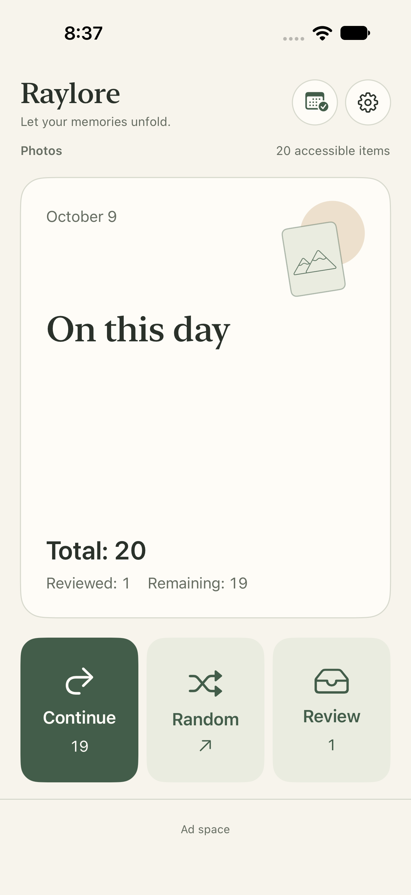

Rediscover this day
Start with a familiar date and the moments you almost forgot. Or go random and see your library with fresh eyes.
Made for iPhone · iOS 17+
A calmer way to revisit and organize your iPhone photo library. Explore On This Day, choose your pace, and review before deleting.
No account needed · On-device photo organization · Contains ads

A calmer rhythm
Start with a familiar date and the moments you almost forgot. Or go random and see your library with fresh eyes.
Swipe through a full-screen feed. Keep a photo, set it aside for review, or add it to an album. Zoom in when the details matter.
Set each Today or Random group to any number from 1 to 500. Pause when you need to; your current group keeps its place.
Sending a photo to Review does not delete it. Take another look, keep it instead, or explicitly confirm deletion. Apple Photos handles the system deletion confirmation.